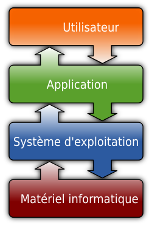
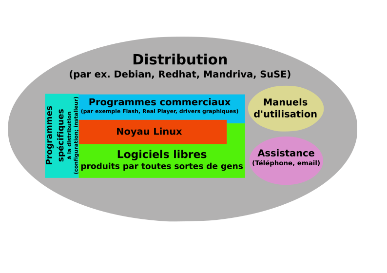

Rappel et définitions
dominique huguenin (dominique.huguenin@rpn.ch) -Système d’exploitation
En informatique, un système d’exploitation (souvent appelé OS pour Operating System, le terme anglophone) est un ensemble de programmes qui dirige l’utilisation des capacités d’un ordinateur par des logiciels applicatifs.

Tiré de [8].
Il reçoit de la part des logiciels applicatifs des demandes d’utilisation des capacités de l’ordinateur — capacité de stockage des mémoires et des disques durs, capacité de calcul du processeur. Le système d’exploitation accepte ou refuse de telles demandes, puis réserve les ressources en question pour éviter que leur utilisation n’interfère avec d’autres demandes provenant d’autres logiciels.
Le système d’exploitation est le premier programme exécuté lors de la mise en marche de l’ordinateur, après l’amorçage. Il offre une suite de services généraux qui facilitent la création de logiciels applicatifs et sert d’intermédiaire entre ces logiciels et le matériel informatique. Un système d’exploitation apporte commodité, efficacité et capacité d’évolution, permettant d’introduire de nouvelles fonctions et du nouveau matériel sans remettre en cause les logiciels.
Il existe sur le marché des dizaines de systèmes d’exploitation différents. Ils sont souvent livrés avec l’appareil informatique — c’est le cas de Windows, Mac OS, Irix, Symbian OS, Ubuntu et Android. Les fonctionnalités offertes diffèrent d’un modèle à l’autre, et sont typiquement en rapport avec l’exécution des programmes, l’utilisation de la mémoire centrale, des périphériques, la manipulation des systèmes de fichiers, la communication, ou la détection d’erreurs.
La définition des systèmes d’exploitation est rendue floue par le fait que les vendeurs de tels produits considèrent comme étant le système d’exploitation la totalité du contenu de leur produit, y compris les vidéos, les images et les logiciels applicatifs qui l’accompagnent.
En 2012, les deux familles de systèmes d’exploitation les plus populaires sont la famille Unix (dont Mac OS X, GNU/Linux, iOS et Android) et la famille Windows, celle-ci détenant un quasi-monopole sur les ordinateurs personnels, avec près de 90 % de part de marché depuis 15 ans.
Unix
Unix, officiellement UNIX (parfois écrit « Unix », avec des petites capitales), est un système d’exploitation multitâche et multi-utilisateur créé en 1969. Il est fondé sur une approche par laquelle il offre de nombreux petits outils, chacun doté d’une mission spécifique.
Tiré de [9]
Particulièrement répandu dans les milieux académiques au début des années 1980, il a été utilisé par beaucoup de start-ups fondées par des jeunes entrepreneurs à cette époque et a donné naissance à une famille de systèmes, dont les plus populaires à ce jour sont les variantes de BSD (notamment FreeBSD, NetBSD et OpenBSD), Dalvik/Linux (Android), GNU/Linux, iOS et OS X. On nomme « famille Unix », systèmes de type Unix ou simplement systèmes Unix l’ensemble de ces systèmes. Il existe un ensemble de standards réunis sous les normes POSIX et single UNIX specification qui visent à unifier certains aspects de leur fonctionnement.
Le nom « UNIX » est une marque déposée de l’Open Group, qui autorise son utilisation pour tous les systèmes certifiés conformes à la single UNIX specification ; cependant, il est courant d’appeler ainsi les systèmes de type Unix de façon générale. Il dérive de « Unics » (acronyme de « Uniplexed Information and Computing System »), et est un jeu de mot avec « Multics », car contrairement à ce dernier qui visait à offrir simultanément plusieurs services à un ensemble d’utilisateurs, le système initial de Kenneth Thompson se voulait moins ambitieux et utilisable par une seule personne à la fois avec des outils réalisant une seule tâche.
Les objets d’UNIX
UNIX distingue:
- des fichiers
- des suites ordonnées d’octets
- des tâches ou processus
- programmes en cours d’exécution
- des flux ou stream
- suites d’octets produits par des fichiers ou des tâches en destination de fichiers ou de tâches
processus ===>flux===> fichier
processus <===flux<=== fichier
Tiré de [[10]]
Un fichier (file) est une suite ordonnée d’octets. La taille maximale des fichiers est bien sûr limitée par la taille physique des mémoires qui les retiennent. Un fichier peut contenir n’importe quelle séquence d’octets et en particulier
- des caractères formant un texte (comme cette documentation),
- des programmes écrits dans un certain langage (FORTRAN, Lisp, PROLOG, Pascal, C …); ce sont aussi des textes.
- des instructions binaires auquel cas ce fichier représente un programme exécutable.
Une tâche (process) est un programme en cours d’exécution. Un même programme peut être simultanément exécuté par plusieurs tâches : par exemple, plusieurs personnes peuvent user en même temps d’un même compilateur ou d’un même éditeur de texte. Une tâche naît, vit puis meurt. Une tâche peut même changer de programme support (cf. exec) sans pour cela devoir perdre la vie.
Une tâche effectue un certain travail en exploitant des flux (stream) pour en produire d’autres.
Un flux est une suite d’octets produite par un fichier ou une tâche en destination d’un fichier ou d’une tâche.
POSIX
POSIX est une famille de standards techniques destinés à fonctionner sur les variantes du système d’exploitation UNIX.
Les quatre premières lettres forment l’acronyme de Portable Operating System Interface (interface portable de système d’exploitation), et le X exprime l’héritage UNIX.
Tiré de [6]
POSIX est une famille de standards techniques définie depuis 1988 par l’Institute of Electrical and Electronics Engineers (IEEE), et formellement désignée par IEEE 1003. Ces standards ont émergé d’un projet de standardisation des interfaces de programmation des logiciels destinés à fonctionner sur les variantes du système d’exploitation UNIX.
Le terme POSIX a été suggéré par Richard Stallman, qui faisait partie du comité qui écrivit la première version de la norme. L’IEEE choisit de le retenir car il était facilement mémorisable. Les quatre premières lettres forment l’acronyme de Portable Operating System Interface (interface portable de système d’exploitation), et le X exprime l’héritage UNIX.
Projet GNU
Le projet GNU est un projet informatique dont les premiers développements ont été réalisés en janvier 1984 par Richard Stallman pour développer le système d’exploitation GNU.
Le projet est soutenu par la Free Software Foundation.
Tiré de [7]
Le projet GNU est un projet informatique dont les premiers développements ont été réalisés en janvier 1984 par Richard Stallman pour développer le système d’exploitation GNU. Le projet est maintenu par une communauté de hackers organisée en sous-projets. Chaque brique du projet est un logiciel libre utilisable de par sa nature dans des projets tiers, mais dont la finalité est de s’inscrire dans une logique cohérente avec l’ensemble des sous-projets en vue de la réalisation d’un système d’exploitation complet et entièrement libre, et avec pour stratégie, l’utilisation de l’existant.
C’est ainsi que la première version fonctionnelle du système GNU est construite en 1992 avec l’utilisation du noyau Linux, un projet développé indépendamment du projet GNU par Linus Torvalds. Mais si la « rencontre GNU/Linux » permet l’assemblage d’un système libre, le développement d’un micro-noyau reste aujourd’hui l’un des objectifs techniques du projet.
Le projet est soutenu par la Free Software Foundation, en assurant notamment sa protection légale par la gestion de ses droits d’auteurs. Les objectifs et la philosophie du projet sont par ailleurs définis dans le manifeste GNU, lequel représente l’acte fondateur du mouvement du logiciel libre. Le projet GNU s’inscrit enfin dans une démarche sociale en plaçant les fondements philosophiques du mouvement devant les objectifs techniques du projet.
Free Software Foundation
La Free Software Foundation (FSF) (littéralement « Fondation pour le logiciel libre »), est une organisation américaine à but non lucratif fondée par Richard Stallman le 4 octobre 1985, dont la mission mondiale est la promotion du logiciel libre et la défense des utilisateurs.
Tiré de[2]
La Free Software Foundation (FSF) (littéralement « Fondation pour le logiciel libre »), est une organisation américaine à but non lucratif fondée par Richard Stallman le 4 octobre 1985, dont la mission mondiale est la promotion du logiciel libre et la défense des utilisateurs.
La FSF aide également au financement du projet GNU depuis l’origine. Son nom est associé au mouvement du logiciel libre.
Noyau Linux
Le noyau Linux est :
- un noyau de système d’exploitation de type UNIX.
- un logiciel libre développé essentiellement en langage C par des milliers de bénévoles et salariés communiquant par Internet.
Tiré de [5]
Le noyau Linux est un noyau de système d’exploitation de type UNIX. Le noyau Linux est un logiciel libre développé essentiellement en langage C par des milliers de bénévoles et salariés communiquant par Internet.
Le noyau est le cœur du système, c’est lui qui s’occupe de fournir aux logiciels une interface pour utiliser le matériel. Le noyau Linux a été créé en 1991 par Linus Torvalds pour les compatibles PC construits sur l’architecture processeur x86. Depuis, il a été porté sur nombre d’architectures dont m68k, PowerPC, StrongARM, Alpha, SPARC, MIPS, etc. Il s’utilise dans une très large gamme de matériel, des systèmes embarqués aux superordinateurs, en passant par les ordinateurs personnels.
Ses caractéristiques principales sont d’être multitâche et multi-utilisateur. Il respecte les normes POSIX ce qui en fait un digne héritier des systèmes UNIX. Au départ, le noyau a été conçu pour être monolithique. Ce choix technique fut l’occasion de débats enflammés entre Andrew S. Tanenbaum, professeur à l’université libre d’Amsterdam qui avait développé Minix, et Linus Torvalds. Andrew Tanenbaum arguant que les noyaux modernes se devaient d’être des micro-noyaux et Linus répondant que les performances des micronoyaux n’étaient pas bonnes. Depuis sa version 2.0, le noyau, bien que n’étant pas un micro-noyau, est modulaire, c’est-à-dire que certaines fonctionnalités peuvent être ajoutées ou enlevées du noyau à la volée (en cours d’utilisation).
GNU/Linux
Un système GNU/Linux est le nom parfois donné à un système d’exploitation associant des éléments essentiels du projet GNU et un noyau Linux.
C’est une terminologie créée par le projet Debian et reprise notamment par Richard Stallman, à l’origine du projet collaboratif GNU qui manquait encore d’un noyau pour en faire un système complet à la création du noyau Linux, en 1991.
Tiré de [3].
Des systèmes complets prêts à l’emploi, réunissant les deux pièces, sont alors apparus, comme la distribution Debian. Dans le langage courant on trouve souvent l’emploi du terme « Linux » seul pour désigner une distribution du système d’exploitation GNU/Linux.
Distribution Linux
Une distribution Linux, appelée aussi distribution GNU/Linux pour faire référence aux logiciels du projet GNU, est un ensemble cohérent de logiciels, la plupart étant logiciels libres, assemblés autour du noyau Linux.

Il existe une très grande variété de distributions, ayant chacune des objectifs et une philosophie particulière. Les éléments différenciant principalement les distributions sont : la convivialité (facilité de mise en œuvre), l’intégration (taille du parc de logiciels validés distribués), la notoriété (communauté informative pour résoudre les problèmes), l’environnement de bureau (GNOME, KDE…), le type de paquet utilisé pour distribuer un logiciel (principalement deb et RPM) et le mainteneur de la distribution (généralement une entreprise ou une communauté). Le point commun est le noyau (kernel) et un certain nombre de commandes.
Références
- Distribution Linux - Wikipédia. https://fr.wikipedia.org/wiki/Distribution_Linux
- Free Software Foundation - Wikipédia. https://fr.wikipedia.org/wiki/Free_Software_Foundation
- GNU/Linux - Wikipédia. https://fr.wikipedia.org/wiki/GNU/Linux
- GNU/Linux Distribution Timeline. http://futurist.se/gldt/
- Noyau Linux - Wikipédia. https://fr.wikipedia.org/wiki/Noyau_Linux
- POSIX - Wikipédia. https://fr.wikipedia.org/wiki/POSIX
- Projet GNU - Wikipédia. https://fr.wikipedia.org/wiki/Projet_GNU
- Système d’exploitation - Wikipédia. https://fr.wikipedia.org/wiki/Syst%C3%A8me_d%27exploitation
- Wikipedia - Unix. http://fr.wikipedia.org/wiki/UNIX